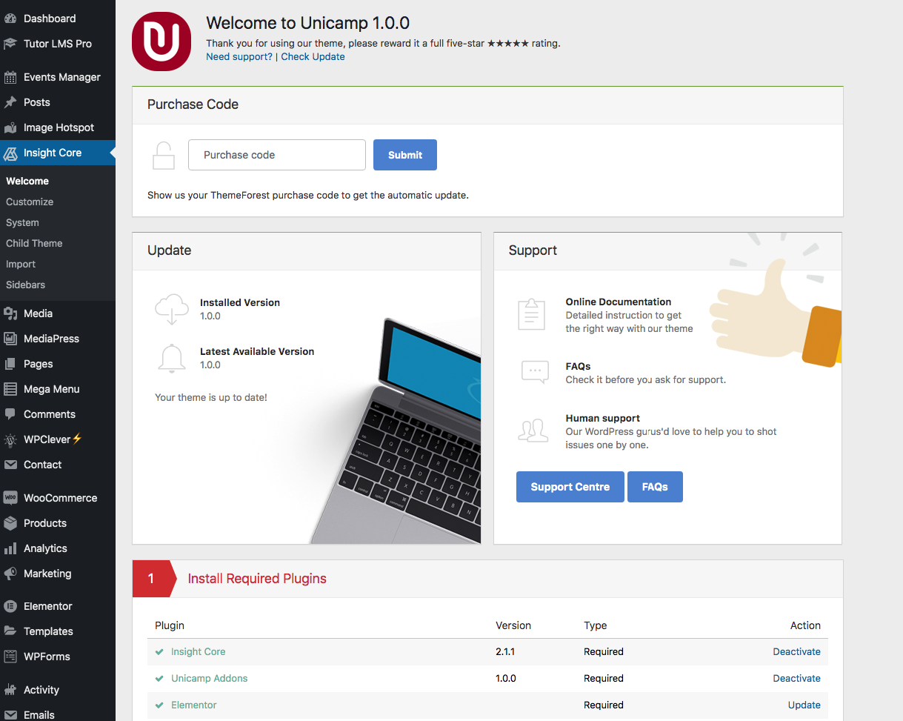
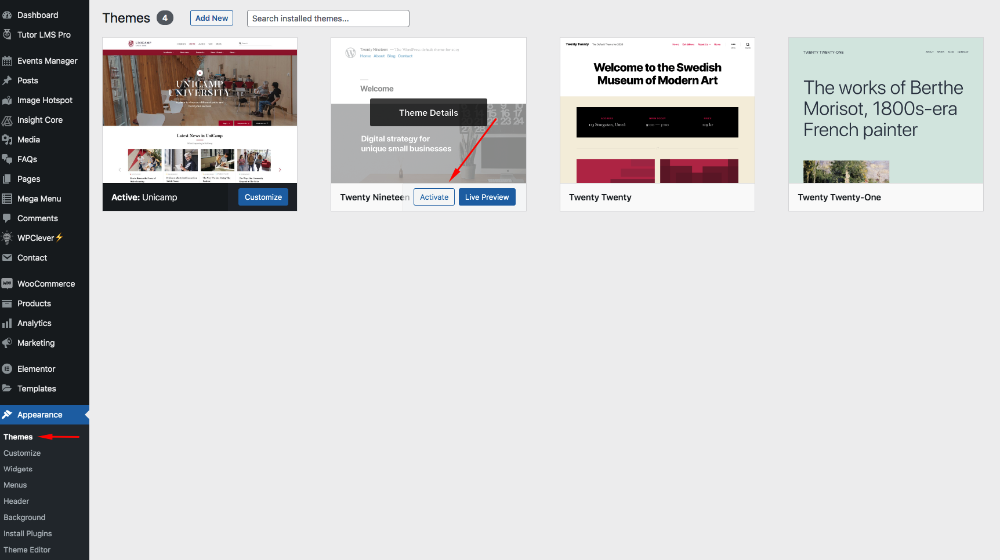
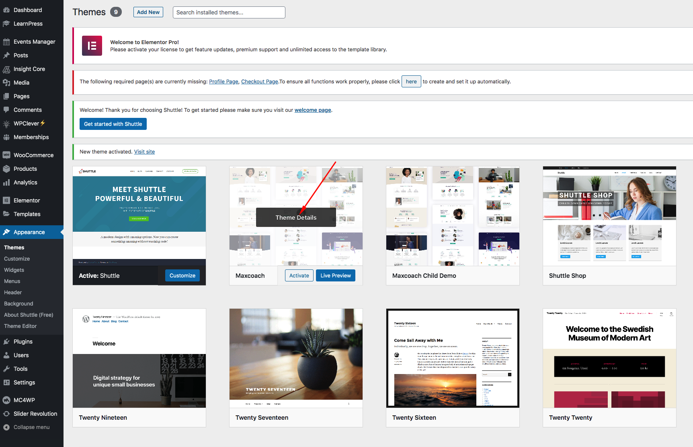
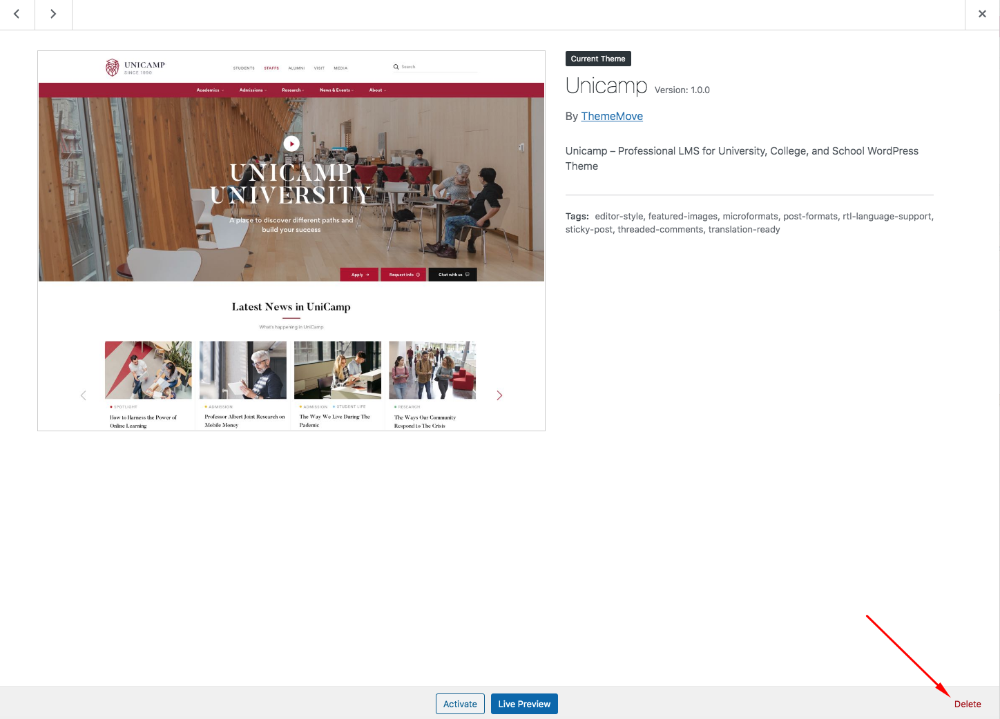

There are 3 ways to update a theme: Update Automatically, Update Manually and Update via FTP.
Step 1: Navigate to Insight Core >> Welcome
Step 2: Fill your Purchase code and submit. Then you will be informed when there is an update, click the button then the theme will be automatically updated.

Step 1: Download the theme package from ThemeForest and get the file theme.zip (UniCamp.zip).
Step 2: You need to deactivate the current UniCamp theme in Appearance > Themes by simply activating a different theme. Once you activate a different theme, delete the UniCamp.



Step 3: Retrieve the UniCamp.zip file from your new Themeforest download. If you download All files & documentation, then you need to unzip the archive file you received, the UniCamp.zip file will be inside of it.
Step 4: Then simply upload and activate the UniCamp file in the Appearance > Themes section like you've done when installing theme.
Step 1: Download the theme package from ThemeForest and retrieve the UniCamp.zip file.
Step 2: Login to FTP > Update file UniCamp.zip into folder var/www/htdocs/wp-content/themes.